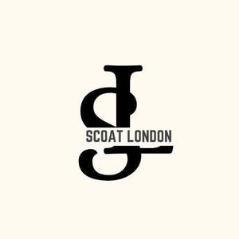

Trade Mark Journal No.2025/013 28 March 2025
UK00004170492 7 March 2025 (18,25,35)

- Class 18
- Raincoats for pet dogs; Bags for sports clothing; Sling bags; Bags (Nose -) [feed bags]; Shoe bags; Canvas bags; Bucket bags; Duffel bags; Belt bags; Nappy bags; Diaper bags; Cross-body bags; Knitted bags; Drawstring bags; Luggage, bags, wallets and other carriers; Backpacks [rucksacks]; Carry-all bags; Duffel bags for travel; Crossbody bags; Grocery tote bags; Cloth bags; Carrying bags; Luggage bags; Belt bags and hip bags; Nose bags [feed bags]; Knitting bags; Toiletry bags; Holdalls for sports clothing; Waterproof bags; Rainproof parasols; Bags for umbrellas; Wheeled bags; Umbrellas; Leather bags; Duffle bags; Clutch bags; Tote bags; Bags; Carry-on bags; Bags for clothes.
- Class 25
- Mackintoshes; Soccer shoes; Foot volleyball shoes; Jackets (Stuff -) [clothing]; Cashmere scarves; Warm-up pants; Shoes soles for repair; Wind resistant jackets; Plush clothing; Bootees (woollen baby shoes); Hijabs; Trousers shorts; Salopettes; High-heeled shoes; Toques [hats]; Boy shorts [underwear]; Baseball caps and hats; Fleece tops; Snoods [scarves]; Waterproof boots; Sheepskin jackets; Army boots; Fishing jackets; Overcoats; Clothing; Rainwear; Flat caps; Rainproof clothing; Shawls; Fingerless gloves; Miniskirts; Button down shirts; Rain trousers; Boots (Ski -); Veils; Headgear; Mountaineering gloves; Gloves [clothing]; Weatherproof pants; Sports caps and hats; Jogging outfits; Motorcycle jackets; Ski gloves; Dress shirts; Caps [headwear]; Head scarves; Casual clothing; Waterproof outerclothing; Russian felted boots (Valenki); Fabric belts [clothing]; Shoes with hook and pile fastening tapes; Shawls [from tricot only]; Gloves; Bathing caps; Warm-up jackets; Clothes; Head wear; Beanie hats; Pyjamas; Climbing boots [mountaineering boots]; Rain slickers; Reversible jackets; Mitts [clothing]; Dress shields; Football boots; Headgear for wear; Cashmere clothing; Jogging pants; Down jackets; Wind suits; Sweatpants; Gym shorts; Motorcycle gloves; Leather (Clothing of -); Baseball caps; Pyjamas [from tricot only]; Short-sleeved shirts; Peaked caps; Clothing of leather; Linen clothing; Shoes for leisurewear; Woven clothing; Wind jackets; Scarves; Shields (Dress -); Shawls and headscarves; Swim caps; Weatherproof jackets; Niqabs; Insoles for shoes and boots; Shorts [clothing]; Sweatshirts; Knitted caps; Ballet shoes; Canvas shoes; Cagoules; Tennis shoes; Knit jackets; Stoles; Volleyball shoes; Snowboard mittens; Camouflage shirts; Mufflers as neck scarves; Knit shirts; Cycling Gloves; Fascinator hats; Sliding shorts; Men's underwear; Bib tights; Latex clothing; Chadors; Gloves as clothing; Cowls [clothing]; Headdresses [veils]; Fleece shorts; Woolen clothing; Capes (clothing); Trekking boots; Shoe soles; Ankle boots; Snowboard jackets; Wind vests; Sweat jackets; Fittings of metal for boots and shoes; Garrison caps; Stuff jackets [clothing]; Waterproof jackets; Shell jackets; Fur coats and jackets; Desert boots; Men's clothing; Climbing boots; Booties; Veils [clothing]; Pullstraps for shoes and boots; Rubber shoes; Tracksuits; Waterproof capes; Caps being headwear; Boots for motorcycling; Men's and women's jackets, coats, trousers, vests; Cycling caps; Mountaineering boots; Gussets for underwear [parts of clothing]; Casual jackets; Mufflers [neck scarves]; Rain boots; Snowboard shoes; Rugby shirts; Furs [clothing]; Boots for sport; Aprons [clothing]; Jerseys [clothing]; Collars [clothing]; Sleeveless pullovers; Golf caps; Pinafore dresses; Thobes; Rugby boots; Wristbands [clothing]; Sneakers; Hoods [clothing]; Stuff jackets; Mukluks; Sports jackets; Slip-on shoes; Wind-resistant jackets; Baselayer bottoms; Scarfs; Mantillas; Swimming suits; Hiking shoes; Water-resistant clothing; Hooded pullovers; Sweat-absorbent underclothing [underwear]; Triathlon clothing; Sweaters; Dress shoes; Legwarmers; Turbans; Tracksuit bottoms; Waterproof pants; Walking shoes; Fleece vests; Neck scarves; Fur hats; Garments for protecting clothing; Maternity wear; Clothing layettes; Snowboard trousers; Turtleneck shirts; Denims [clothing]; Corduroy shirts; Wooden shoes [footwear]; Boots; Safari jackets; Basketball shoes; Après-ski boots; Riding gloves; Headscarves; Board shorts; Maternity clothing; Stiffeners for boots; Riding boots; Short-sleeved T-shirts; Hoods; Sailing wet weather clothing; Knitted gloves; Leggings [trousers]; Military boots; Camouflage gloves; Gilets; Clothing for wear in judo practices; Smart clothing; Shoes; Belts [clothing]; Headscarfs; Pockets for clothing; Bucket caps; Swimming caps [bathing caps]; Sneakers [footwear]; Leather shoes; Jackets [clothing]; Thong sandals; Waterproof clothing; Embroidered clothing; Hooded sweatshirts; Jogging bottoms [clothing]; Clothing for skiing; Jackets; Rain hats; Golf clothing, other than gloves; Costumes; Gabardines [clothing]; Trenchcoats; Jackets being sports clothing; Rain jackets; Tongues for shoes and boots; Knot caps; Chino pants; Waterproof trousers; V-neck sweaters; Fingerless gloves as clothing; Dress pants; Snowboard boots; Gloves with conductive fingertips that may be worn while using handheld electronic touch screen devices; Heavy jackets; Visors [clothing]; Shoes for foot volleyball; Neck scarves [mufflers]; Waterproof boots for fishing; Gloves for cyclists; Body warmers; Skull caps; Galoshes; Winter gloves; Leather clothing; Insoles [for shoes and boots]; Trousers; Knitted baby shoes; Handwarmers [clothing]; Leather jackets; Suede jackets; Lounge pants; Ski boots; Sleeved jackets; Rainproof jackets; Cycling shoes; Men's dress socks; Esparto shoes or sandles; Woolly hats; Tracksuit tops; Sweatsuits; Ready-to-wear clothing; Korean outer jackets worn over basic garment; [Magoja]; Sleeveless jerseys; Ready-made clothing; Layettes [clothing]; Hunting boots; Knitwear [clothing]; Dance costumes; Athletic shoes; Capelets; Fleece pullovers; Mock turtleneck shirts; Weatherproof clothing; Rain capes; Camouflage jackets; Sweat-absorbent underwear; Sportswear; Body suits; Fleeces; Mittens; Caps with visors; Weather resistant outer clothing; Corsets [clothing, foundation garments]; Articles of outer clothing; Kerchiefs [clothing]; Sashes for wear; Thermal clothing; Corduroy trousers; Caps (Shower -); Platform shoes; Silk scarves; Shoulder scarves; Running shoes; Kaftans; Rain ponchos; Wooden shoes; Hiking boots; Bathing costumes; Ushankas [fur hats]; Burkas; Esparto shoes or sandals; Winter boots; Athletic clothing; Riding Gloves; Sports shoes; Blouson jackets; Jogging shoes; Bathing costumes for women; Underpants; Casual trousers; Swimming costumes; Shower caps; Work boots; Flip-flops; Hooded sweat shirts; Snow boots; Polo boots; Turtleneck pullovers; Quilted jackets [clothing]; Sweatshorts; Fur jackets; Windproof clothing; Parkas; Windcheaters; Woollen socks; Face masks [fashion wear]; Underwear; Knitted underwear; Snowboard gloves; Swimming caps; Wellington boots; Caps; Fleece jackets; Waterproof shoes; Outer soles; Rain shoes; Open-necked shirts; Riding jackets; Clothing for cycling; Ponchos; Raincoats; Anoraks [parkas]; Corduroy pants; Wind pants; Parts of clothing, footwear and headgear; Padded jackets; Gym boots; Polar fleece jackets; Heel pieces for shoes; Dance shoes; Rain coats; Wind coats; Fitted swimming costumes with bra cups; Mock turtleneck sweaters; Jogging bottoms; Turtleneck sweaters; Short-sleeve shirts; Bottoms [clothing]; Sports caps; Body stockings; Kerchiefs; Headbands [clothing]; Swimming trunks; Belts for clothing; Halloween costumes; Long-sleeved shirts; Bomber jackets; Oilskins [clothing]; Sandals and beach shoes; Walking boots; Ski jackets; Hunting jackets; Silk clothing; Nappy pants [clothing]; Windproof jackets; Headbands for clothing; Shawls and stoles; Knitted clothing; Valenki [felted boots]; Boots for sports; Trousers of leather; Horse-riding boots; Trousers for sweating; Lace boots; Hoodies; Beanies; Sleeveless jackets; Denim jackets; Waterpolo caps; Soccer boots; Outer clothing; Gloves for apparel; .
- Class 35
- Reproduction of advertising material; Advertising services for the literary industry; Digital marketing; Targeted marketing; Research services relating to advertising and marketing; Political advertising services; Affiliate marketing; Advertising services to create corporate and brand identity; Marketing information; Direct marketing; Product marketing; Internet marketing; Direct marketing consulting; Presentation of companies on the Internet and other media; Advertising services to create brand identity for others; Marketing advice; Web site traffic optimization; Planning of marketing strategies; Website traffic optimisation; Website traffic optimization; Referral marketing; Retail services connected with the sale of clothing and clothing accessories; Advertising services to promote public awareness of environmental issues and initiatives; Advertising agencies; Sales promotion using audiovisual media; Wholesale services relating to cups and glasses; Business marketing consultancy; On-line advertising and marketing services; Promotion of goods through influencers; Preparation of advertising material; Developing promotional campaigns for businesses; Event marketing; Marketing research; On-line trading services in which seller posts products to be auctioned and bidding is done via the Internet; Online marketing; Marketing forecasting; Business intermediary services relating to the matching of various professionals with clients; Financial marketing; Marketing analysis; Analysis of marketing trends; Web site traffic optimisation; Business management of swimming pool complexes; Advertising and marketing; Marketing, advertising, and promotional services; Brand strategy services; Marketing services provided by means of digital networks; Providing marketing consulting in the field of social media; Advertising via electronic media and specifically the internet; Blogger outreach services; Promotional marketing services using audiovisual media; Database marketing; Retail of third-party pre-paid cards for the purchase of clothing; Advertising, promotional and marketing services; Design of marketing surveys; Advertising services to promote public awareness of environmental matters; Advertising, marketing and promotional services Advertising copywriting; Agency services for promoting sports personalities Influencer marketing; Marketing assistance; Marketing; Marketing consulting; Developing promotional campaigns for business; Rental of advertising time on communication media; Marketing consultancy; Marketing services; Wholesale services in relation to bags; Advertising and marketing services; Advertising services to promote public awareness in the field of social welfare; Shop window dressing; Retail services in relation to sun tanning appliances; Providing business information in the field of social media; Business marketing services; Market campaigns; Promotional management of celebrities; Marketing research services; Marketing, advertising and promotion services; Business networking; Online advertising network matching services for connecting advertisers to websites; Marketing management advice; Dissemination of advertising, marketing and publicity materials; Development of business organization strategies relating to corporate social responsibility; Organisation of promotions using audio-visual media; Advertising, marketing and promotion services; Providing business information via a web site; Promotion, advertising and marketing of on-line websites; Evaluating the impact of advertising on audiences; Organisation of promotions using audiovisual media; Marketing agency services; Investigations of marketing strategy; Advertising services to promote public awareness of social issues; Business management of authors and writers; Business intermediary services relating to the matching of potential private investors with entrepreneurs needing funding; Providing business information via a website; Marketing studies; Media relations services; Promotional marketing; Advertising and marketing services provided by means of social media; Distribution of advertising, marketing and promotional material; Consultancy services relating to advertising, publicity and marketing; .
SCOAT LONDON